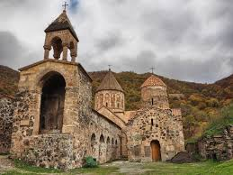
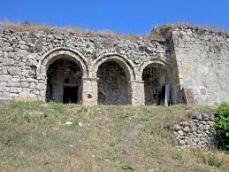

ՇՈՒՇԻ
Հայ առաքելական եկեղեցու Արցախի թեմի կենտրոնն է։Կառուցվել է 1868-1887 թվականներին։
VIEW THIS CATEGORY »

ԴԱԴԻՎԱՆՔ
Հայկական առաքելական միջնադարյան վանական համալիր Արցախի Շահումյանի շրջանի Դադիվանք գյուղում:
VIEW THIS CATEGORY »
ԳԱՆՁԱՍԱՐ
Վանական համալիր Արցախի Հանրապետությունում, Մարտակերտի շրջանի Վանք գյուղի մոտակայքում,
VIEW THIS CATEGORY »

ՀԱԿՈԲԱՎԱՆՔ
Հայկական վանական համալիր, որը գտնվում է Մեծ Հայքի Արցախ նահանգի Մեծ Առանք գավառում:
VIEW THIS CATEGORY »